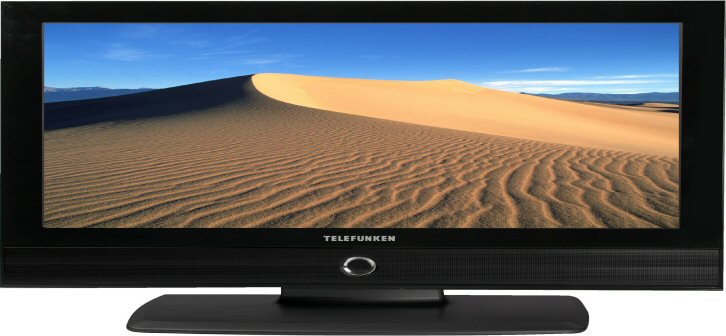
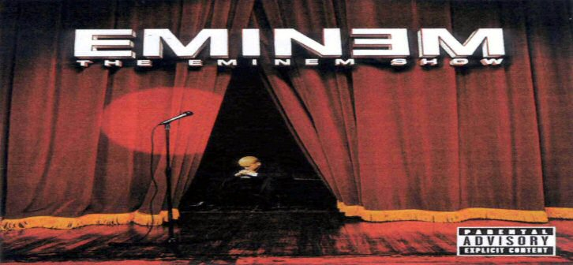
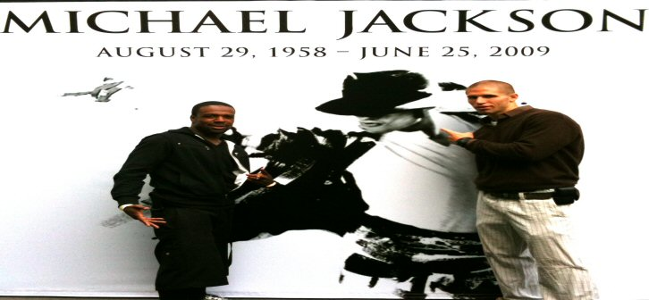
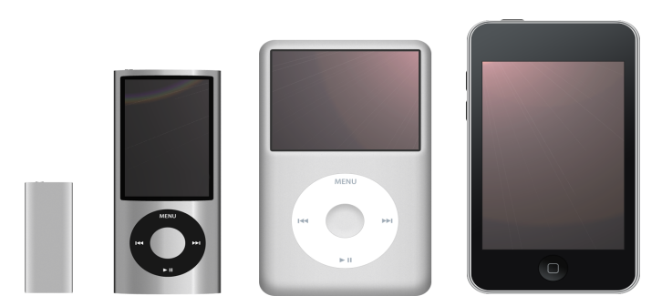

One of the Decades top selling consoles.
Making mancaves more popular since 2005.
 Set the new standard for television.
Because i need to see every bead of sweat on a man, think about how that sounded.
Top Selling Franchise of the new decade.
Brought FPS into the mainstream market as a top genre.
Making the internet, and your grandma, even more popular.
Made bloging one of the internets top features next to youtube and google.
Reaching the next milestone in Computer Graphics, and creating the "Avatards".
Was the highest grossing movie ever as of 2010.
 The top grossing artist of the new Decade.
Hates a LOT of stuff, even your mom.
 The King of Pop.
Once made fun of all over the world, now you are looked down upon.
We will never forget.
Started the War on Terrorism.
 Making CD's look middle aged.
have you ever seen the dance comercials?
 Creating the British sterotype, one rude remark at a time.
Creating the British sterotype, one rude remark at a time.
Was the biggest television show of the Decade.